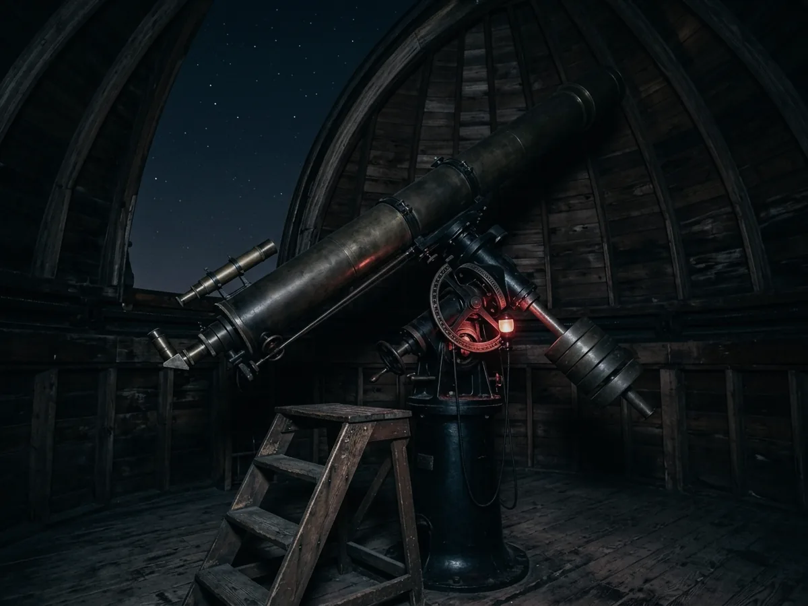

Support
Membership
Nobody can promise you a clear night. Membership is how you stop caring — come back next week instead, at no extra cost, until the sky cooperates.
What each tier includes
Every tier includes free admission and the same discount. The differences are how many people it covers, and how far into the observatory you get.
What it actually pays for
VELA takes no regular public funding. Ticket income covers the building; membership and donations cover the science and the schools.
In the last financial year membership paid for the new camera on the 1.2 metre, the digitisation of 4,100 glass plates from the 1920s and 30s, and 63 school visits from schools that could not have afforded the coach fare otherwise.
It also keeps the lights off. We spent a good deal of last year persuading three neighbouring parishes to shield their street lighting, and that work has no ticket revenue attached to it at all.
Patrons
Patrons fund the schools programme outright. In return you get a night on the 1.2 metre with a duty astronomer — a real one, on a real target, with the data to take home — and your name in the annual review if you want it there.
